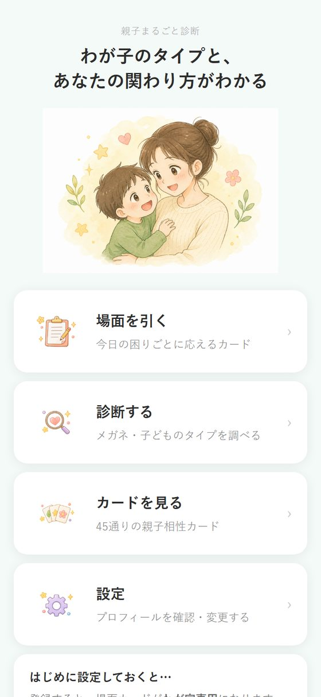
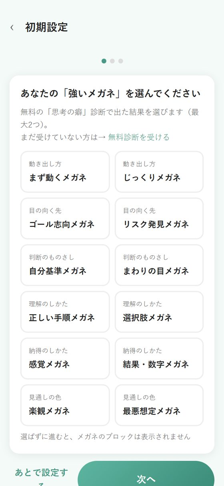
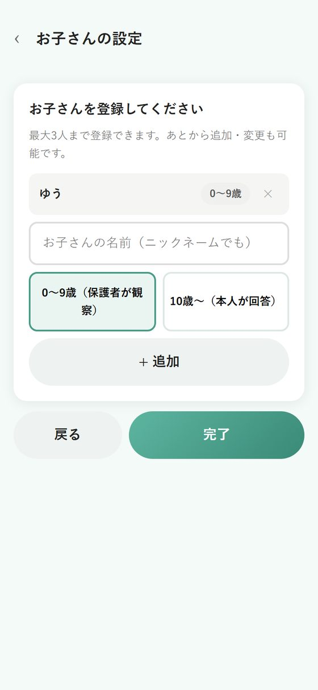
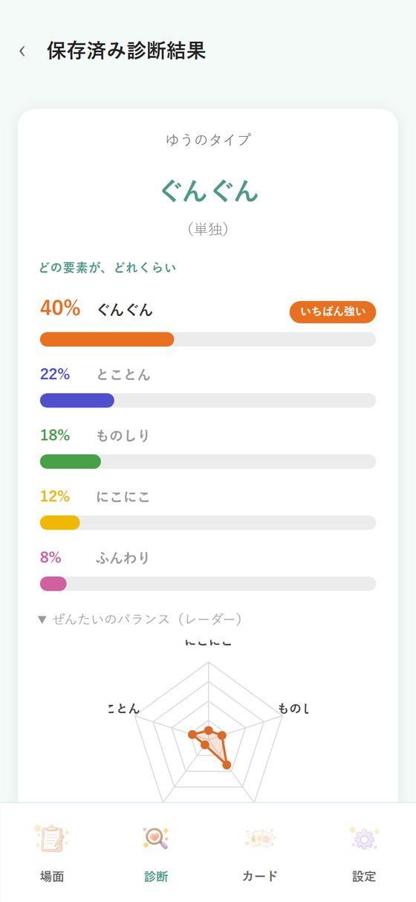
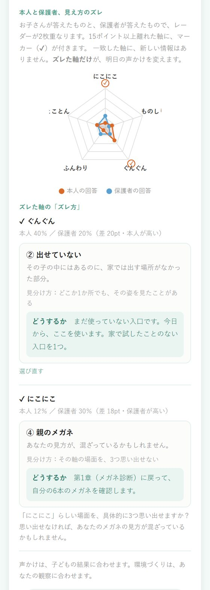
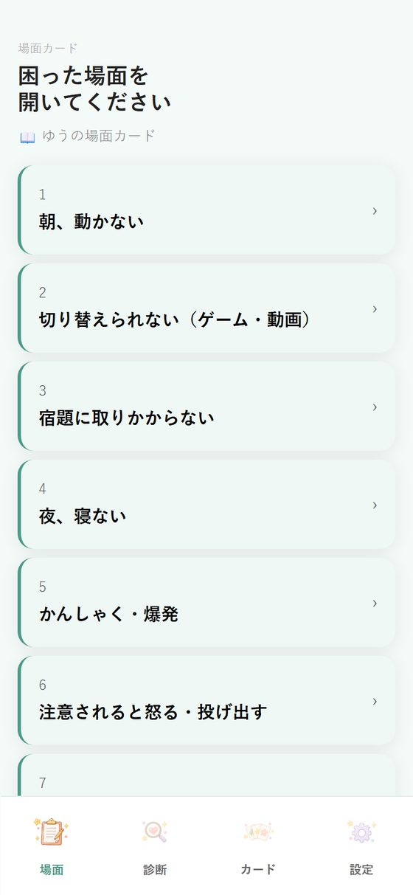
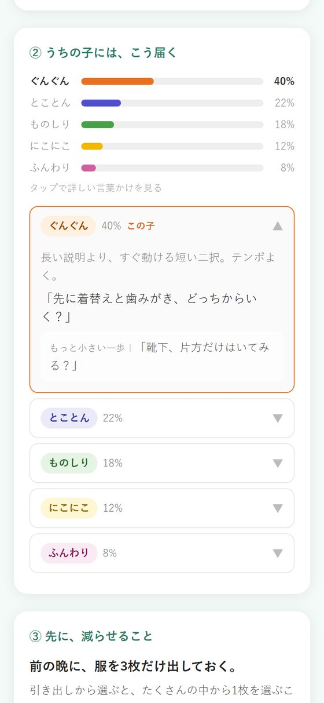
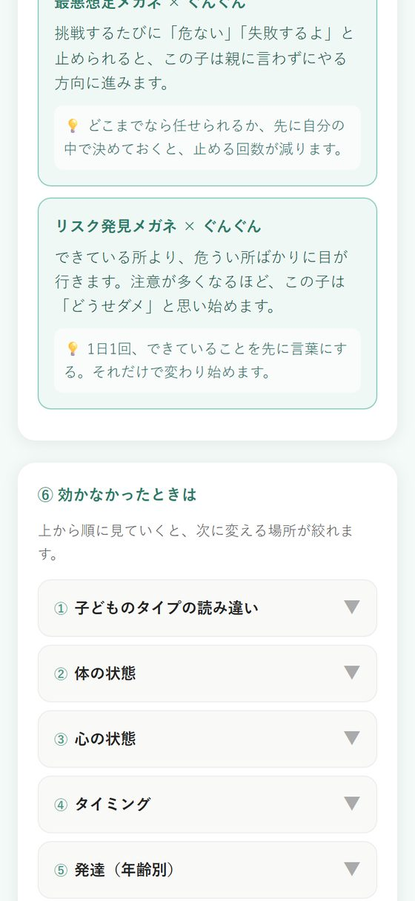
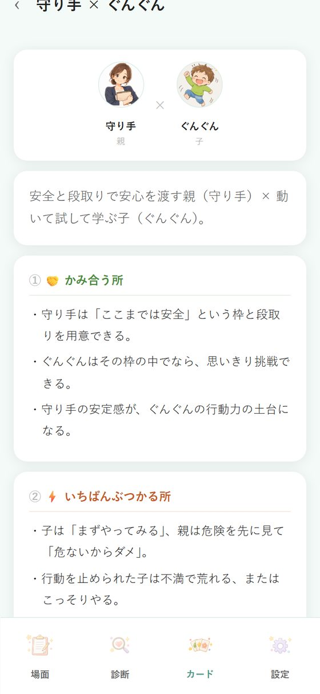

このアプリ、けっこう中身が多いです。
でも、今日ぜんぶ読む必要はありません。
まず、設定だけ。ここまでで5分くらいです。
あとは、困ったときに開けば大丈夫です。
入力した内容は、保存されます。
一度やっておけば、次からは開くだけ。
何度でも見返せますし、あとから変えることもできます。

トップの「設定」を開いてください。
「設定を変更する」を押すと、次の3つを順番に設定できます。
順番に進むだけなので、5分もかかりません。

無料noteの「思考の癖」診断で出た結果を、最大2つ選んでください。
画面の中に、「無料診断を受ける」というリンクがあります。
そこから受けられるので、先に済ませてください。3分ほどです。
あなたの口から、自然と出てくる言葉のクセが分かります。
そして、それがこの子にどう届いているかまで見えるようになります。
続けて、親タイプ診断（27問）に進みます。
出てくるのは、9つのタイプのうち、あなたに近いもの。
これは、育ってきた中で身についたクセ（メガネ）ではなく、もともとの気質のほうです。
この子とぶつかりやすい場所が、先に分かります。
「なんで、ここでいつも揉めるんだろう」の答えです。

最大3人まで登録できます。あとから追加・変更もできます。
入れるのは、2つだけ。
0〜9歳 ……保護者が観察して答えます
10歳〜 ……お子さん本人にも答えてもらえます
年齢に合った内容が出るようになります。
同じ「宿題をやらない」でも、6歳と10歳では、できることが違います。
いま求めていいこと／まだ求めなくていいことが、分かれて出てくるようになります。
設定が終わったら、トップの「診断する」へ。

質問に答えると、5つのタイプの分布が出ます。
にこにこ／ものしり／ぐんぐん／ふんわり／とことん
1つに決めつけません。
「今日は、この面が強く出ているな」を見るためのものです。
あなたと、お子さん。2つが揃います。
同じ言葉でも、言う側と、受け取る側の組み合わせで、届き方が変わります。
だから、2つ揃ってはじめて
「うちの親子だと、
どう言えば届くか」
が出せるようになります。
ここが、ふつうの診断アプリと違うところです。
「あなたのお子さんは◯◯タイプです」で、終わらせません。
お子さんが10歳以上なら、本人にも答えてもらえます。
診断の入口で「誰が答えますか？」と出ます。
まず「本人が答える」で1回。
本人が答え終わった結果画面に、そのまま「保存して、保護者の目でも答える」ボタンが出るので、
一度ホームに戻らなくても、続けてもう1回答えられます。
2回そろうと、「設定」→「お子さんの診断結果」に、
本人の答えと、あなたの答えが、レーダーで重なって出ます。

2人の見方が合っている軸に、新しい情報はありません。
15ポイント以上ズレた軸だけが、明日の声かけを変えます。
ズレた軸ごとに、アプリがどのズレ方かを出します。
本人が高くつけた軸は、「その面を、家や外で見たことがあるか」を聞かれます。
答えると、そのズレ方に合った「どうするか」が出ます。
声かけは、子どもの結果に合わせます。
環境づくりは、あなたの観察に合わせます。
トップの「場面を引く」を開いてください。

いま困っていることを選ぶだけです。
朝、動かない
宿題に取りかからない
切り替えられない（ゲーム・動画）
かんしゃく・爆発
……全14場面
カードを開くと、いくつか項目が並んでいます。
でも、バタバタしているときは、ここだけで大丈夫です。

「② うちの子には、こう届く」に、お子さんのタイプに合わせた言葉が出ています。そのまま使ってみてください。
今日は、それで十分です。
落ち着いたときに、同じカードのほかの項目も開いてみてください。

自分が、いつも何をしているかが書いてあります。
「あ、これうちだ」で終わらせず、その一言が、どのメガネから出ていたかまで見てみてください。
あなたが言いやすい形と、この子が受け取りやすい形。
そのズレが、どこにあるかが分かります。
効かなかったときに、どこを見るかです。
やってみて効かなかった日、つい別の言い方を探したくなりますよね。
でも、たいてい外れていたのは、言葉ではなく、条件のほうです。
何度か読んでいると、だんだん、口から出てくる言葉が変わりはじめます。
がんばって言い換えるのではなく、見えているものが変わるから、出てくる言葉が変わるんです。
トップの「カードを見る」には、あなた × お子さんの組み合わせが出ます。
お子さんを2人以上登録している場合は、診断済みの子ども全員分のカードが出ます。

書いてあるのは、7つ。
カードによっては、この下に「やりすぎたな、と思ったら」も出ます。
あなたの強みが、この子には、そのままの形では届かない。
それだけです。
守り方が足りないのでも、愛情が足りないのでもありません。渡し方を、少し変えるだけです。
組み合わせが変わるので、別のカードになります。
上の子に効いた言い方が、下の子に効かないのは、当たり前です。
あなたの言い方が下手になったわけではありません。
きょうだいの人数ぶん、引いてみてください。
ここまでで、5分です。
あとは、困ったときに開けば大丈夫です。
診断結果は、あとから変えられますか
はい。何度でもやり直せます。
お子さんは育つので、半年〜1年に一度、やり直してみると変化が見えます。
きょうだいの分も登録できますか
できます。最大3人まで、「設定」から追加してください。
子どもに、タイプを伝えてもいいですか
「あなたは◯◯タイプだから」という伝え方は、しないでください。
その言葉に、自分を合わせていくことがあります。
伝えるなら、決めつけない形で。
「こんないいところがあるよ」
「そこ、〇〇ちゃんの強いところだね」
伸びしろのほうを渡してあげてください。
診断が当たっていない気がします
「思っていたのと違う」ということは、まだ見えていなかった面があるということかもしれません。
しっくりこない場合は、いちばん近いものを選び直して大丈夫です。
効かないときは、どうすれば
カードの下にある「⑥ 効かなかったときは」を、上から見てください。
たいてい、外れているのは言葉ではなく条件です。